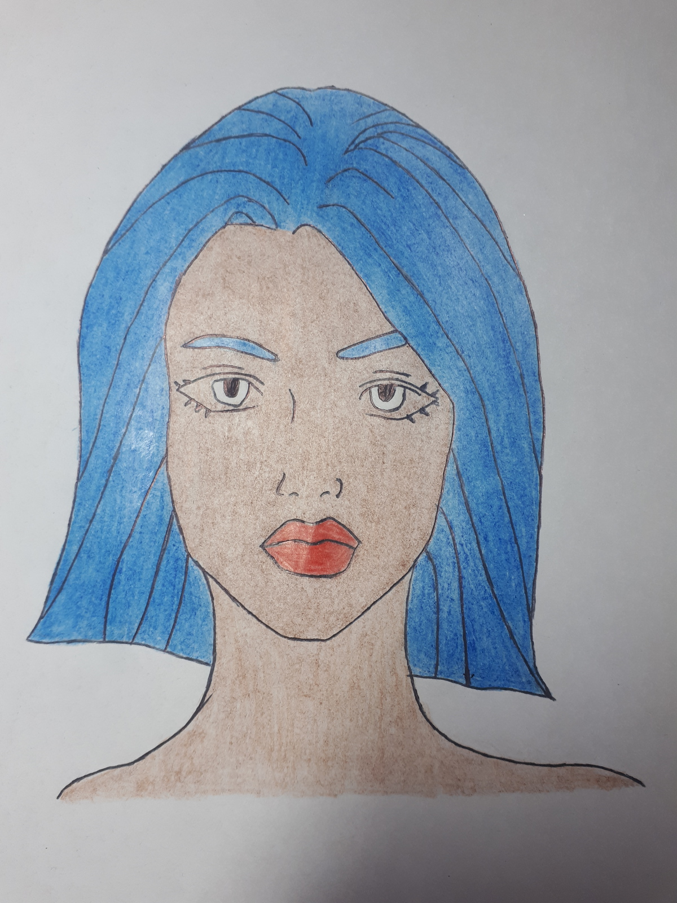
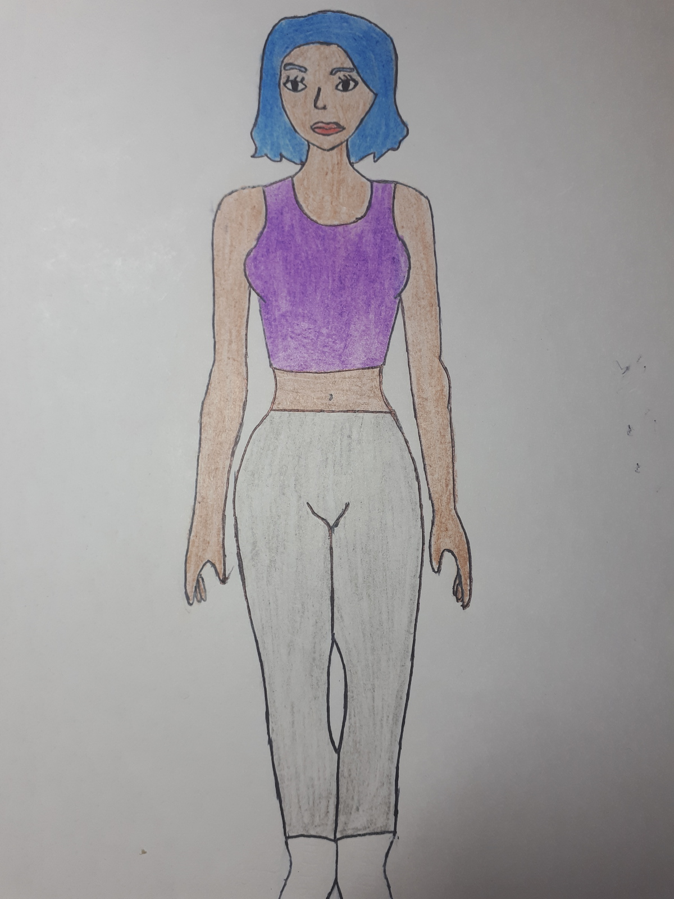
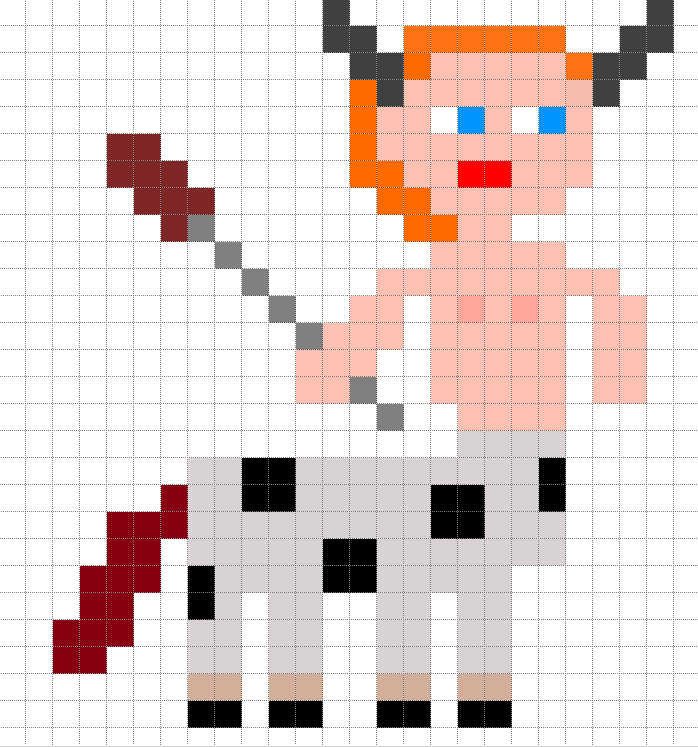

Es el personaje principal de nuestro juego en el cual se enfrenta a diversos desafios de los cuales se pone aprueba ella misma
Se podria describir en el juego como una chica delgada de piel oscura con el pelo corto tintado de azul, viste con ropa de tirantes y mallas. Se encuentra aturdida sin saber que hacer tras levantarse en una sala que desconoce.
Esta es un boceto de como quedaria nuestra protagonista con sus distintas caracteristicas.
Atraves de esta imagen se intenta dar una impresion de como estaria en el juego al comienzo, ya que es posible que durante el trascurso del mismo sufra algunos cambios.
Este podria ser uno de los distintos aliados que se podria encontrar nuestra protagonista durante el trascurso de su aventura, estos podran ayudarla a completar los diferentes desafios que se les pueden aparecer

A su vez como no, despues de un protagonista viene un antagonista el cual se llama Braulio Luthor el cual dara grandes desafios a nuestra protagonista.
Nombre de la Organización: AFA
Misión: Reclutar a personas con un coeficiente intelectual alto, y les realiza unas pruebas de destreza
Posibles aspectos de la protagonista